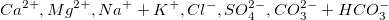

Ein (trilineares) Piper-Diagramm ist ein spezialisierter Diagrammtyp zur grafischen Darstellung der Chemie von Wasserproben.
Origins Piper-Diagramm wird aus Arbeitsblattdaten mit der Diagrammzuordnung XYZXYZ erstellt. Jede Spalte enthält den Prozentwert von jeder Ionengruppe. Die Spaltenreihenfolge ist entscheidend und sollte sein:  Der Prozenzwert jeder Kationengruppe wird auf Grundlage der Gesamtkonzentration der Kationen von Kalzium, Magnesium und Natrium plus Potassium berechnet; der Prozentanteil von jeder Anionengruppe basiert auf der Gesamtkonzentration der Anionen von Sulfat, Chlorid und Karbonat plus Hydrogenkarbonat.
Markieren Sie die Quelldaten und öffnen Sie den Dialog plotpiper durch eine der folgenden Methoden:
ODER
| Eingabe | Legen Sie den Eingabebereich XYZXYZ für das Piper-Diagramm fest. |
|---|---|
| Sample-ID | Legen Sie die Spalte fest, die für Sample-ID verwendet wird, fest. Diese Spalte wird als Symbolfarbe und Indexspalte der Form im Piper-Diagramm verwendet, und diese Spalte stellt die Beschriftungen für die Punkt-für Punkt-Legende. |
| Gelöste Feststoffe gesamt | Legen Sie den Datenbereich für die Menge der insgesamt gelösten Feststoffe fest. Diese Spalte wird verwendet, um die Symbolgröße in Layer 1 (der "Diamant") des Piper-Diagramms zu steuern. |
| Diagramm ausgeben | Legen Sie fest, wo das Diagramm ausgegeben wird. |
Drei Arbeitsblattvorlagen werden bereitgestellt, um die ursprünglichen Konzentrationsdaten in Prozentwerte umzuwandeln und sie gemäß der Datenanforderungen für das Piper-Diagramm zu strukturieren.
Um diese drei Vorlagen zu öffnen:
Um die Abstände zwischen den Layern zu steuern (d. h. jede Raute):
Ein benutzerdefinierter Datensatz kann verwendet werden, um Farbe/Form/Inneres der Symbole im Piper-Diagramm zu indexieren. Sie können auch die Inkrementliste der Farbe, Form oder des Inneren benutzerdefiniert anpassen. Dies tun Sie auf den Registerkarten Inkrementeditor, Formliste bzw. Liste Innen im Dialog Details Zeichnung.